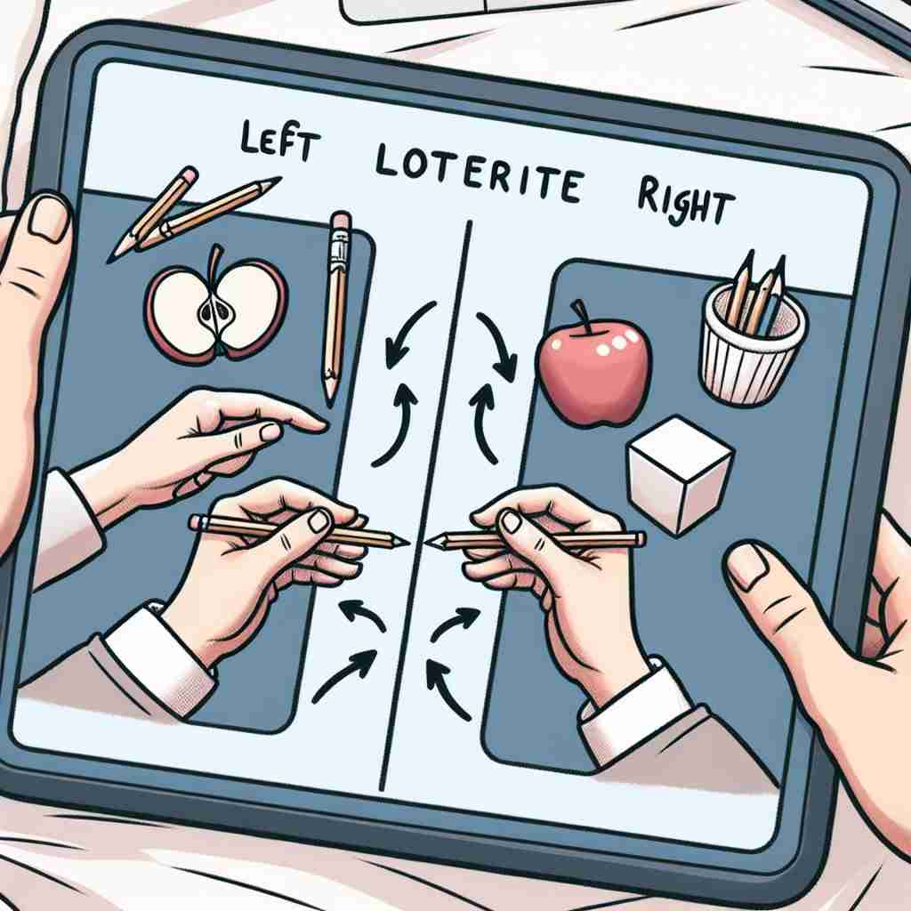

💬 The artist shows left laterality by using his left hand to paint.

💬 This image shows the handedness preference of a person, with actions performed using both hands.

💬 The drawing shows a clear left side preference with the apple and pencils.
🗝️ n. the preference for using one side of the body over the other
🖼️ 在一个阳光明媚的公园，孩子们正在踢足球。一位小男孩习惯性地用右脚射门。在整个过程中，他明显更依赖右脚，这展现了'laterality'作为身体一侧偏好的含义。
🔍 laterality 的核心含义是身体一侧的偏好使用。通过想象这种偏好，我们可以理解它如何扩展到大脑功能的偏侧性、身体的左右区分，以及生物学中器官的不对称发展。记忆时，可以联想自己惯用手的习惯，然后将这种 '偏好' 的概念应用到其他相关领域。
💬 The artist shows left laterality by using his left hand to paint.
💬 This image shows the handedness preference of a person, with actions performed using both hands.
💬 The drawing shows a clear left side preference with the apple and pencils.
🌳 由词根 "later-"（侧面、边）加上名词后缀 "-ality" 组成，表示 "侧性"，尤其在心理学和生物学中用于描述大脑或身体一侧的优势。
💡 记忆 "laterality" 时，可以联想 "lateral"（侧面）和 "-ity"（性质）结合在一起，表示一种与侧面有关的特性。通过记住 "later-" 的侧面含义，可以帮助理解其他包含该词根的单词。
🗝️ n. the tendency for certain functions to be more dominant on one side of the brain than the other
🖼️ 在一个安静的图书馆里，一位心理学家正在观察一个实验。实验中，参与者被要求解决创意问题。发现一些人在处理语言任务时，左脑活动更为活跃，这展示了'laterality'作为大脑功能侧重的含义。
💬 Language processing shows strong laterality, typically favoring the left hemisphere.
❓ 扩展到大脑功能的偏侧性
🗝️ n. the quality or state of having distinct right and left sides
🖼️ 在一个艺术课堂上，老师展示了一张人体图解，清晰地标示出身体的左右两边。他解释如何左手和右手结构和功能不同，这体现了'laterality'作为左右侧明确区别的状态。
💬 The laterality of the human body is evident in its external symmetry.
❓ 从身体偏好扩展到一般的左右区分
🗝️ n. in biology, the development of different structures or functions on the right and left sides of an organism
🖼️ 在一个生物实验室里，研究人员正在研究一种鱼类。观察发现，这种鱼的左右鳍具有不同的形状和功能，这是'bilateral'的生物学差异发展的一个例子，展示了'laterality'在生物学中的含义。
💬 The laterality of the heart, with its chambers arranged asymmetrically, is crucial for its pumping function.
❓ 将概念应用于生物学领域